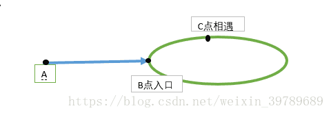

算法日记1-寻找重复数
算法日记1-寻找重复数
题目描述：
给定一个n+1个元素的数组，其中每个元素都在1~n之间。数组中有且只有一个元素重复出现了，其他元素均只出现一次，请找出该元素。
输入样例：
[3,1,3,2,4]
输出样例：
3
解法一：暴力遍历法
对原数组进行排序，然后定义pre，now两个指针，初始化为num[0]和num[1]，不断循环遍历整个数组，一旦num[pre]==num[now]，则返回num[pre]。该方法修改了原数组。
1 | sort(num,num+len); |
解法二：二分法
该方法来源于抽屉原理：对于样例中的所有元素如果我们将其排序并按相同元素摆放置同一列的策略则会得到下列的数组：
| 1 | 2 | 3 | 4 |
|---|---|---|---|
| 1 | 2 | 3 | 4 |
| 3 |
很明显，如果我们使用二分法并采用下整除策略，那么mid=2。此时数组中小于或等于2的元素个数num=2<=mid。这说明重复的数字不在小于或等于mid的那个区间中，那么反之就在大于mid的区间中。因此我们继续在mid的右侧寻找，最终当left==right的时候，left即是我们所求的重复数字。代码如下：
1 | while(left < right){ |
解法三：快慢指针法
该方法来源于图论中寻找环的起始点的算法。先介绍图论中寻找环的算法。问题：对于一个链表，如何判断其中是否存在环，以及环的起点在哪。
样例：
1->2->3->4->2
很明显其中2，3，4构成了一个环。快慢指针即设定slow和fast，slow每次走一步，fast每次走两步。那么按照环和行走速度的不一致，slow和fast必然会在环中某一点相遇。故当slow==fast，说明链表中有环，否则则无环。当fast和slow相遇时，我们将fast初始化为链表的头结点，再次让slow和fast循环，每次走一步，当slow和fast再次相等时就是环的起点。
证明：

通过上图可知，slow在第一次相遇之前所走路程为|AB|+|BC| + m * s，fast所走路程为|AB|+n * s+|BC|，s为环的长度。而由于fast始终比slow快两倍，那么fast所走路程又可以表示为2 * slow，即2 * (|AB|+|BC| + m * s)。由此列出方程,再根据|CB|=s-|BC|，代入方程化简可得，|AB|=(m-2n-1) * s+|CB|。那么当我们第一次到达c点时，用slow记住c点，fast回到链表头结点。两者以同样的速度前进，当fast走了(m-2n-1) * s时，意味着fast离B点还有|CB|的距离(由上面的结果式得来)。此时slow正好绕环走了m-2n-1圈，那么slow离B点也是|CB|的距离，那么也就是说下次相遇必然是fast走到了B点，slow也走到了B点。故此时第一次相遇点一定是环的入口。
那么将以上思想带入本题。我们可以将本题数组当作静态链表，因为数组元素不超过n也就是说不超过下标。那么由于有重复元素，那么必然存在环。应用以上思想，则很容易求出环的起点也就是重复元素。代码如下：
1 | int slow = num[0]; |